|
|
HELP FIND THE FOLLOWING LOCATIONS
PAGE 45
All the locations on this page are from the series THE SECRET SERVICE. Most of the locations already identified for the this series are in the Slough, Pinewood and Burnham Beeches area.
THE
SECRET SERVICE: To Catch a Spy
(Brian
Heard: Autumn 1968)
H34: St. Hubert's Home Farm, St.
Huberts Lane, Gerrards Cross
After being directed to farm
South of Esher on the Portsmouth
Road,
Father Unwin (Stanley Unwin) drives his Model T Ford, Gabriel, through
the
gates. He watches the helijet land and then follows the Jaguar carrying
Sir
Humphrey and Grey as it leaves.
(Identified by Sietse Postma,
May 2022)

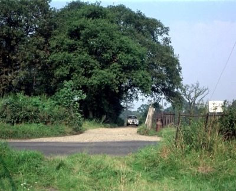
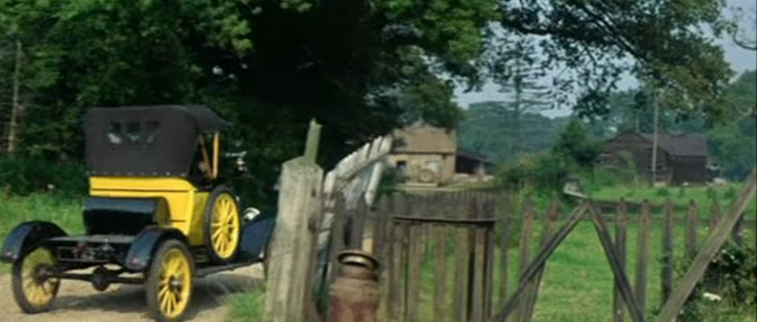
THE SECRET SERVICE: The Feathered
Spies (Ian Spurrier: Autumn 1968)
Unknown 1 - Father Unwin keeps an eye on
DeGrout’s house
and follows John Masden’s
car as it leaves.
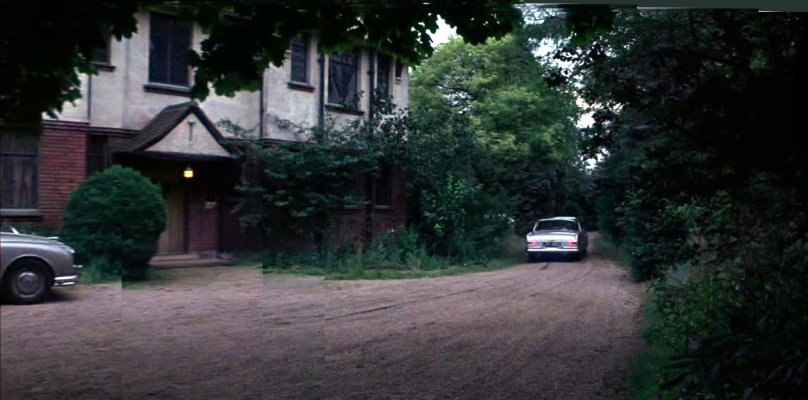
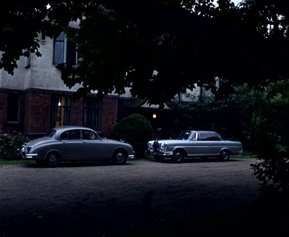

THE
SECRET SERVICE: The Cure (Leo
Eaton: Autumn 1968)
Mill House, Riversdale [Private Road], Bourne End - Father Unwin (Stanley Unwin) arrives in his
Model T Ford, Gabriel, at
Greenways
Nursing Home
(Identified by Geoff Dodd, May 2026)


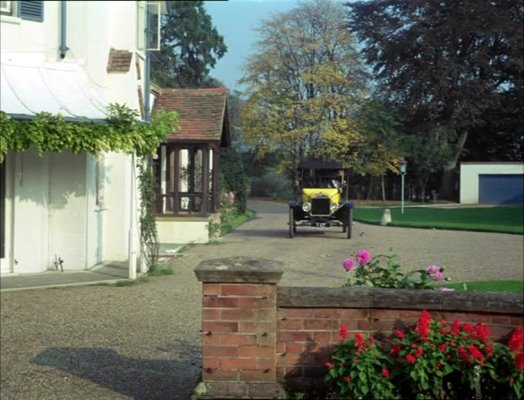

THE
SECRET SERVICE: The
Deadly
Whisper (Leo
Eaton: Autumn 1968)
West Sheepcote, Wooburn Common
Road, Wooburn Green, Buckinghamshire - Father Unwin
(Stanley Unwin) arrives in his
Model T Ford, Gabriel, at the home
of Professor Soams.
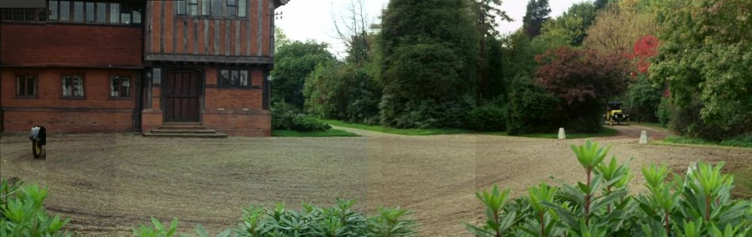
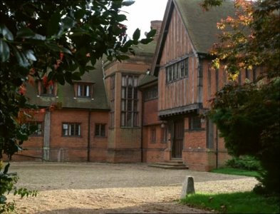
THE
SECRET SERVICE: A
Hole In One (Brian Heard: Autumn 1968)
Dropmore House gates, Heathfield Road, Taplow
- Father Unwin (Stanley Unwin)
drives his Model
T Ford, Gabriel,
through the gates of the Leyland Golf Club.
(Identified by Geoff Dodd, November
2022)
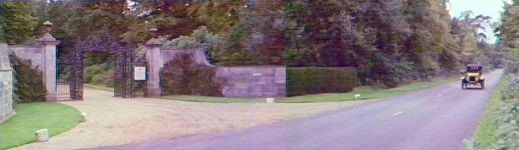
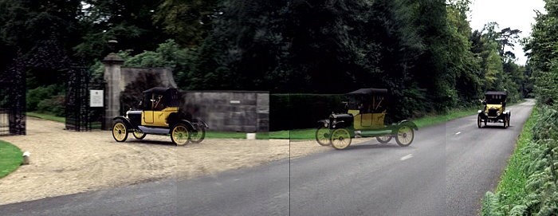
Unknown 1 - The house overlooking the 15th green used by the foreign agents as a headquarters.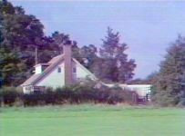
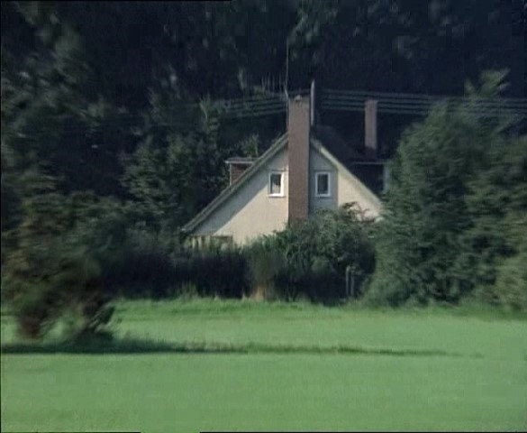
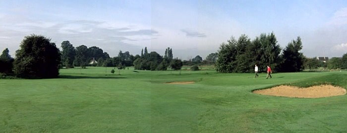
 Probably
Maidenhead Golf Club
Probably
Maidenhead Golf Club
Think you know a spot? Need a bigger image? Email me.
< Previous | Index | Avengerland | Next >
Copyright © 2022 Anthony R. McKay